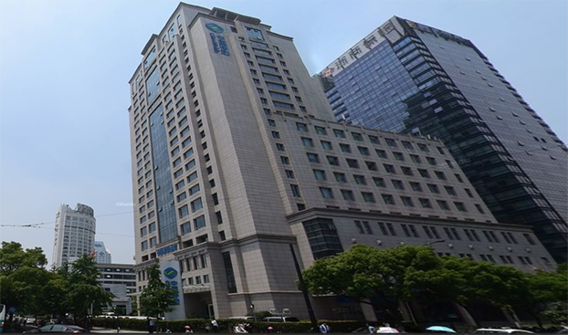

<!--大楼搜索栏-->
<div class="view">
  <div class="search-bar">
    <div class="panel-head">
      <i class="icon-magnifier"></i>
          搜索
      <div class="panel-action">
        <a href="javascript:;" (click)="slideToggle();">
          <i class="ti-minus"></i>
        </a>
      </div>
    </div>
    <div class="panel" style="display: none;">
      <ul>
        <li>
          <label>大楼编号</label>
          <input type="text">
        </li>
        <li>
          <label>大楼名称</label>
          <input type="text">
        </li>
        <li>
          <label>大楼性质</label>
          <select>
            <option>全部</option>
            <option>自建</option>
            <option>自购</option>
            <option>租赁</option>
          </select>
        </li>
        <li>
          <label>大楼地址</label>
          <input type="text">
        </li>
      </ul>
      <div class="panel-search">
        <input class="btn-info" type="button" value="开始查询">
      </div>
    </div>
  </div>
</div>
<!--大楼列表展示-->
<div class="view">
  <div class="row">
      <a class="btn btn-danger" href="javascript:;"><i class="ti-plus"></i> 新增</a>
  </div>
  <ul class="page-area">
  <!--  <li class="card">
      <div class="card-img">
        
      </div>
      <div class="mark">
        <h3>No.4000</h3>
        <p>移动信息大厦设计新颖、风格独特的这座大楼，在国内超高层建筑中首次采用了国际上先 进的劲性钢骨混凝土筒体和巨型钢结构行架技术，有高大无柱开放型大堂空间。大堂内的球体博览区、外墙面富有节奏感的铝板造型和半镜面玻璃幕墙，与大楼顶部的整流板、通信铁塔及大堂内悬浮的球体等构成“宇宙空间站”的造型。 国内一流的这座信息大楼有先进的通信、信息、智能化设施，实现无线通信的全覆盖，移动电话和无线寻呼在楼内无通信盲点；大楼还配备先进的光缆以及SDH同步数字系列传输系统、ATM宽带交换系统等。</p>
        <a class="btn-detail" [routerLink]="['detail',1]">详情</a>
      </div>
    </li>-->
    <li class="card" *ngFor="let building of buildings;let idx=index">
      <div class="card-img">
        <div class="el-overlay">
          <ul class="el-info">
            <li><a class="btn-center-edit" href="javascript:;"><i class="ti-marker-alt"></i></a></li>
            <li><a class="btn-center-del" href="javascript:;"><i class="ti-trash"></i></a></li>
          </ul>
        </div>
       <!-- -->
        
      </div>

      <div class="mark">
        <span>No.{{building.buildingId}}</span>
        <h3>{{building.name}}</h3>
       <!-- <p>{{building.summary}}</p>-->
       <!-- <a class="btn-detail" [routerLink]="['detail',building.id]">详情</a>-->
        <div class="text-muted">
          <a class="text-muted " [routerLink]="['detail',building.id]" >
            <i class="ti-file"></i> 详情</a>
          <a class="text-muted m-l-10 m-r-10" href="javascript:;"><i class="ti-marker-alt"></i> 修改</a>
          <a class="text-muted m-l-10" href="javascript:;" onclick="onDel('4001');"><i class="ti-trash">
          </i> 删除
          </a>
        </div>
      </div>
    </li>
  </ul>
  <div class="turn">
    <ul>
      <li *ngFor="let i of pages"
          [hidden] = "pageLimit(i)"
          [ngClass]="{'active':i === pageNo}"
          (click)="goPage(i);">
        {{i}}
      </li>
    </ul>
  </div>
</div>


